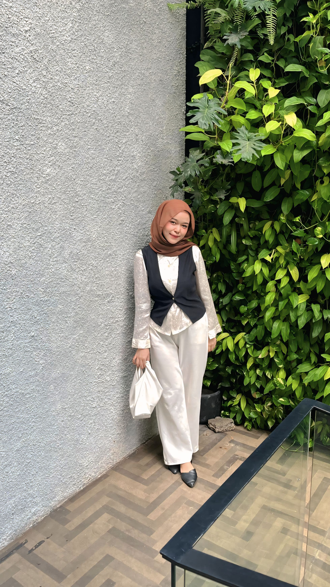
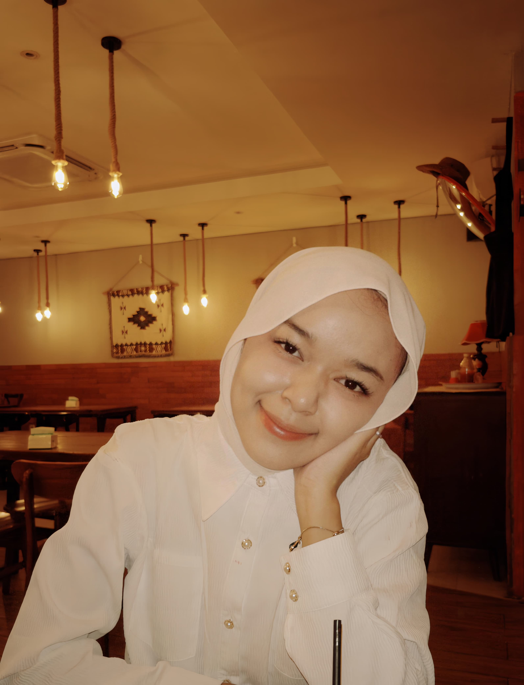
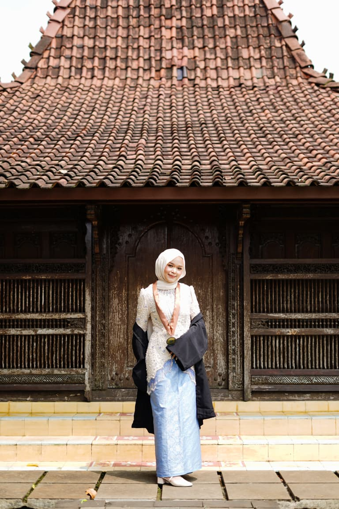
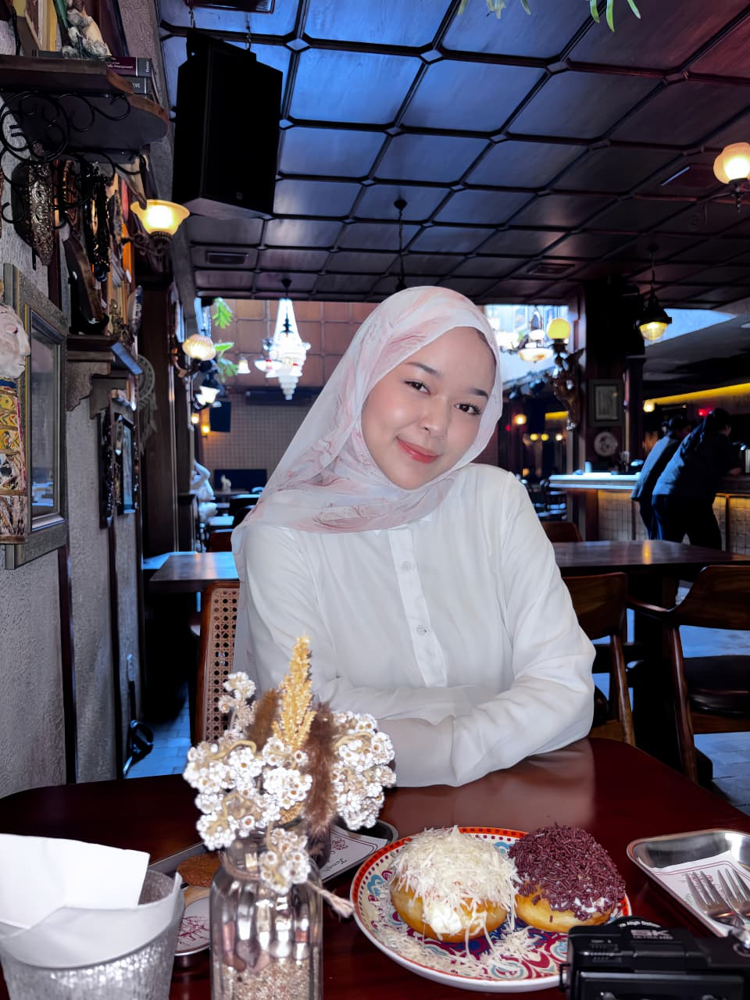

Bahagia Selalu
Semoga senyum ayang selalu hadir di setiap hari, dan hati ayang selalu dipenuhi rasa tenang.
Sebelum masuk ke website ini, aku mau tanya sesuatu dulu...
Elvis Presley
Hari ini bukan cuma tentang bertambahnya usia ayang, tapi juga tentang betapa bersyukurnya aku karena ayang hadir di dunia ini.
Semoga hari ulang tahun ini menjadi awal dari banyak hal indah yang akan datang dalam hidup ayang.
Semoga senyum ayang selalu hadir di setiap hari, dan hati ayang selalu dipenuhi rasa tenang.
Semoga ayang selalu merasa dicintai, dihargai, dan dijaga oleh orang-orang yang menyayangi ayang.
Semoga semua impian ayang perlahan menjadi nyata, satu per satu, di waktu yang paling indah.
Klik setiap foto untuk melihatnya lebih besar bersama pesan kecil yang aku tulis khusus untuk ayang.

Klik untuk membuka ❤️

Klik untuk membuka ❤️

Klik untuk membuka ❤️

Klik untuk membuka ❤️
Ada pesan panjang yang aku simpan khusus untuk hari ulang tahun ayang.
Ayangku,
Selamat ulang tahun, cintaku. ❤️
Hari ini adalah hari yang sangat spesial, karena hari ini adalah hari ketika seseorang yang begitu berarti dalam hidupku dilahirkan ke dunia. Aku tidak tahu bagaimana hidupku akan terlihat jika aku tidak pernah mengenal ayang, tetapi yang aku tahu, sejak ayang hadir, banyak hal terasa lebih indah dari sebelumnya.
Terima kasih karena sudah menjadi diri ayang yang luar biasa. Terima kasih untuk semua perhatian kecil yang mungkin menurut ayang sederhana, tetapi sangat berarti untukku. Terima kasih karena selalu berusaha mengerti, selalu peduli, dan selalu ada, bahkan di saat aku tidak menjadi versi terbaik dari diriku.
Aku suka caranya ayang tersenyum. Aku suka caranya ayang tertawa. Aku suka caranya ayang bercerita tentang hal-hal kecil yang membuat ayang bahagia. Bahkan aku suka caranya ayang mengeluh tentang hari yang melelahkan, karena semua hal tentang ayang terasa begitu berharga untukku.
Mungkin aku tidak selalu pandai mengungkapkan perasaan. Tetapi ada satu hal yang selalu ingin aku pastikan ayang tahu: aku mencintai ayang dengan sungguh-sungguh.
Aku bangga dengan semua perjuangan ayang. Aku bangga dengan setiap langkah yang sudah ayang ambil sejauh ini. Ayang masih berdiri, masih berjuang, dan masih menjadi pribadi yang luar biasa.
Semoga kesehatan selalu menyertai ayang. Semoga setiap impian yang ayang simpan perlahan menemukan jalannya untuk menjadi kenyataan. Semoga langkah ayang selalu dipenuhi keberanian, dan semoga hati ayang selalu dipenuhi ketenangan.
Saat ayang lelah, aku ingin menjadi tempat ayang beristirahat. Saat ayang sedih, aku ingin menjadi orang yang menghapus air mata ayang. Saat ayang bahagia, aku ingin menjadi orang pertama yang ikut merayakannya bersama ayang.
Terima kasih karena sudah menjadi bagian dari hidupku. Terima kasih karena sudah memberikan begitu banyak kenangan indah yang akan selalu aku simpan.
Jadi hari ini, di hari ulang tahun ayang, izinkan aku mengucapkan satu hal yang paling penting:
Terima kasih karena sudah lahir.
Terima kasih karena sudah hadir di dunia ini.
Terima kasih karena sudah hadir dalam hidupku.
Selamat ulang tahun, ayangku.
Aku sayang ayang. Hari ini. Besok. Lusa. Dan selama yang aku bisa. ❤️
Aku akan terus memilih ayang, di hari ulang tahun ayang, di hari biasa, dan di setiap hari setelahnya. Ayang adalah rumah paling hangat untuk hatiku.